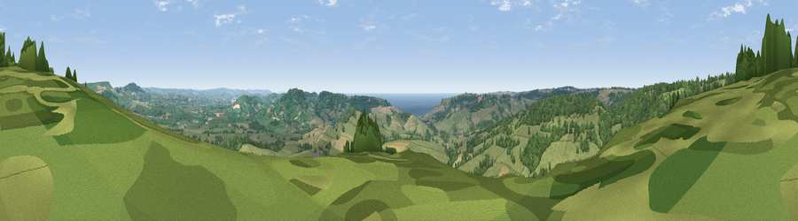

Viewpoint near Wootton Fitzpaine
#3955 in England · top 11% of its area beats it · near Wootton FitzpaineWhere it is
The exact computed spot (SY 37162 97438). Click the marker for map links.
The view, rendered

A 360° render of this exact spot computed from the terrain model, tree cover and land cover — summer colours, afternoon light, calibrated against photographs of famous viewpoints. Real trees, hedges and buildings will differ in detail.
The panorama
Grey silhouette: terrain skyline in each direction (720 bearings, Earth curvature and refraction included). Dashed green: skyline with trees (+15 m) and buildings (+8 m) as obstacles. Blue strip: how far the ground is visible on each bearing.
Where the view opens
Wedge length = distance to the farthest visible ground on that bearing (vegetation-aware). Rings at 10, 25 and 50 km.
What fills the view
63% grassland · 31% woodland · 4% cropland · 2% water
Angular shares of the visible panorama (visual magnitude), not map area. Landscape diversity 0.37 (0–1 Shannon).
Key numbers
More beautiful places nearby
The staircase of upgrades: each row has a higher view potential than everything closer. Driving times are estimates from straight-line distance, calibrated against real road routing — check an actual route before setting out.
| Place | Direction | Drive | Score |
|---|---|---|---|
| Lambert's Castle Hill | N · 1 km | ~4 min | 78.7 |
| Viewpoint near Charmouth | SSW · 4 km | ~10 min | 81.2 |
| Viewpoint near Charmouth | S · 4 km | ~10 min | 81.3 |
| Chardown Hill | SE · 5 km | ~11 min | 81.5 |
| Viewpoint near Burstock | NE · 6 km | ~12 min | 81.8 |
| Golden Cap | SE · 6 km | ~13 min | 88.7 |
| The Knoll | ESE · 19 km | ~32 min | 91.0 |
50.77310, -2.89252 · source: screening · position refined by local search. Computed location — check access rights before visiting.